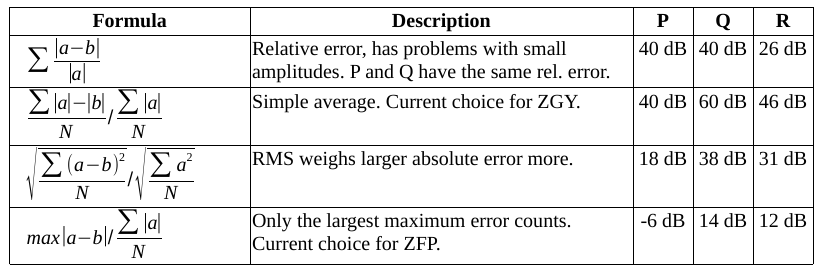

This is a technical explanation of why compression often shows brick-sized artifacts, and what can be done about it.
The intended audience is developers working on compression.
I am trying to understand different metrics for measuring noise. Both those used in the compression code and what Victor uses to visualize the quality. I am also trying to understand why displaying the noise as absolute difference in amplitude shows ugly brick artifacts.
The root problem is how we measure quality. E.g. a visual display of (old cube - new cube) might show artifacts where (old cube / new cube) would not. Or vice versa.
Possible metrics:
The first alternative sounds like a good idea, except that for very small amplitudes just a small amount of noise can be devastating. And a zero amplitude causes a divide by zero.
The second idea looks reasonable but is difficult to compute because the entire volume must be known before compression can start. So we might be stuck with the third option. The third option can give very visible brick-shaped artifacts if a particular brick has a number of high amplitude spikes while the neighbors don't. This will appear to increase the average signal level, thereby allowing the compressor to tolerate more noise in real samples. So that brick looks noisier. In alternative 2 we might see the opposite effect. Here the signal level remains the same, and the compressor might decide to reduce the compression ratio for this brick in a futile attempt to faithfully replicate the spikes. That problem would get worse if the cost function used RMS amplitude instead of a plain average. It might get slightly better if using median instead of average, but that would be prohibitively expensive at runtime.
It is also possible that we might devise a function that lies in between #1 and #3.
The "visual appearance" is difficult to turn into a formula, and might not be the best approach for autotracking and attribute extraction anyway. And figuring out what is best for those will be a challenge.
I am currently using #2, which makes the compression more expensive but gives better results than #4 which was the first one I tried.
Another question: Should the metric be more concerned with the (presumably few) large errors, or it it better to view those outliers as relatively harmless and instead concentrate on reducing noise in most samples? Ideally we should exclude spikes that are just noise but include real samples that happen to have high amplitudes. It would be quite a challenge to differentiate between those two.
Here are a few suggestions. To evaluate each alternative I will compute the result for three data sets, each of them with 100 samples evenly distributed in the range [-100..+100].
The formulas below show how to get the noise / signal ratio. To get the snr in decibel, use snr = -20 * log10(noise/signal)

There are other metrics not covered here. For example, how does the noise affect autotracking? Case in point is that the data might changes sharply at brick boundaries due to different parameters used in compression. The old ZGY compression gives better quality near the edges of each brick. I suspect this is a deliberate feature added to aid autotracking. I am not sure though.
All the formulas use only the contents of this brick to extract the "signal" part. If it is possible to replace this with statistics for the entire survey then this gives 3 more formulas. The first formula would not change as it is purely local.